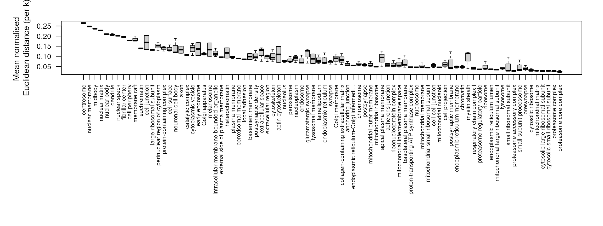
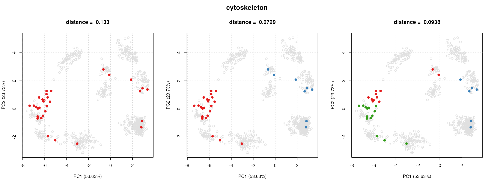

vignettes/v04-pRoloc-goannotations.Rmd
v04-pRoloc-goannotations.RmdThis document walks users through a typical pipeline for adding
annotation information to spatial proteomics data. For a general
practical introduction to pRoloc and spatial proteomics data analysis,
readers are referred to the tutorial, available using
vignette("pRoloc-tutorial", package = "pRoloc").
Exploring protein annotations and defining sub-cellular localisation
markers (i.e. known residents of a specific sub-cellular niche in a
species, under a condition of interest) play important roles in the
analysis of spatial proteomics data. The latter is essential for
downstream supervised machine learning (ML) classification for protein
localisation prediction (see
vignette("pRoloc-tutorial", package = "pRoloc") and
vignette("pRoloc-ml", package = "pRoloc") for information
on available ML methods) and the former is interesting for initial
biological interpretation through matching annotations to the data
structure.
Robust protein-localisation prediction is reliant on markers that reflect the true sub-cellular diversity of the multivariate data. The validity of markers is generally assured by expert curation. This can be time consuming and difficult owing to the limited number of marker proteins that exist in databases and elsewhere. The Gene Ontology (GO) database, and in particular the cellular compartment (CC) namespace provide a good starting point for protein annotation and marker definition. Nevertheless, automatic extraction from databases, and in particular GO CC, is only a first step in sub-cellular localisation analysis and requires additional curation to counter unreliable annotation based on data that is inaccurate or out of context for the biological question under investigation.
To facilitate the above, we have developed an annotation retrieval
and management system that provides a flexible framework for the
exploration of the sub-cellular proteomics data. We have developed a
method to correlate annotation information with the multivariate data
space to identify densely annotated regions and assess cluster
tightness. Given a set of proteins that share some property e.g. a
specified GO term, a k-means clustering is used to fit the data (testing
k = 1:5) and then for each number of k
components tested, all pairwise Euclidean distances are calculated per
component, and then normalised. The minimum mean normalised distance is
then extracted and used as a measure of cluster tightness. This is
repeated for all protein/annotation sets. These sets are then ranked
according to minimum mean normalised distance and then can be displayed
and explored using the pRolocGUI
package.
In this vignette we present a step-by-step guide showing users how to (1) how to add protein annotations, here we use the GO database as an example, and (2) rank and order information (e.g. GO terms) according to their correlation with the data structure, for the extraction of optimal data specific annotated clusters.
We will demonstrate our pipeline for adding and ranking annotation
information using a LOPIT experiment on Pluripotent Mouse Embryonic
stems (Christoforou
et al 2016), available and documented in the pRolocdata
data package as hyperlopit2015.
library("pRoloc")
library("pRolocdata")
## Subset data for markers for example
data("hyperLOPIT2015")
hyperLOPIT2015 <- markerMSnSet(hyperLOPIT2015)All GO terms associated to proteins that appear in the dataset are
retrieved and used to create a binary matrix where a 1 (0) at position
\((i,j)\) indicates that term \(j\) has (not) been used to annotate feature
\(i\). This matrix is appended and
stored in the feature data slot of the MSnSet dataset using
the addGoAnnotations function. We first however need to
prepare annotation parameters that will enable us to query the Biomart
repository using the package, from where we are able to retrieve GO
terms. The specific Biomart repository and query will depend on the
species under study and the type of features. This can be set using the
setAnnotationParams function.
In the code chunk below we set the annotation parameters for the
hyperLOPIT2015 dataset. As this species used was mouse and
the featureNames of the hyperLOPIT2015 dataset
are Uniprot accession numbers the input to the function is defined as
inputs = c("Mus musculus", "UniProtKB/Swiss-Prot ID"). See
?setAnnotationParams for details.
params <- setAnnotationParams(inputs = c("Mouse genes",
"UniProtKB/Swiss-Prot ID"))## Using species Mouse genes (GRCm39)## Warning: Ensembl will soon enforce the use of https.
## Ensure the 'host' argument includes "https://"## Using feature type UniProtKB/Swiss-Prot ID(s) [e.g. A0A087WPF7]## Connecting to Biomart...## Warning: Ensembl will soon enforce the use of https.
## Ensure the 'host' argument includes "https://"Now the parameters for the search have been defined we can use the
addGoAnnotations function to add a GO information matrix to
the featureData slot of the dataset. The
addGoAnnotations function takes a MSnSet
instance as input (from which the featureNames will be
extracted) and it downloads the CC terms (the default, biological
process and the molecular function namespaces are also supported) found
for each protein in the dataset. The output MSnSet has the
CC term binary matrix appended to the fData, by default
this is called GOAnnotations (and changed using the
fcol argument).
cc <- addGoAnnotations(hyperLOPIT2015, params,
namespace = "cellular_component")
fvarLabels(cc)## [1] "entry.name" "protein.description"
## [3] "peptides.rep1" "peptides.rep2"
## [5] "psms.rep1" "psms.rep2"
## [7] "phenodisco.input" "phenodisco.output"
## [9] "curated.phenodisco.output" "markers"
## [11] "svm.classification" "svm.score"
## [13] "svm.top.quartile" "final.assignment"
## [15] "first.evidence" "curated.organelles"
## [17] "cytoskeletal.components" "trafficking.proteins"
## [19] "protein.complexes" "signalling.cascades"
## [21] "oct4.interactome" "nanog.interactome"
## [23] "sox2.interactome" "cell.surface.proteins"
## [25] "markers2015" "TAGM"
## [27] "GOAnnotations"The addGoAnnotations function by defualt does not do any
filtering of the terms evidence codes unless specified in the
evidence argument, see ?addGoAnnotations for
more details.
With many well-annotated species and datasets containing typically
thousands of proteins, we often find many CC terms, of which many may
not be particularly meaningful. These such terms can be filtered out
using the filerMinMarkers and filterMaxMarkers
functions.
## Next we filter the GO term matrix removing any terms that have
## have less than `n` proteins or greater than `p` % of total proteins
## in the dataset (this removes terms that only have very few proteins
## and very general terms)
cc <- filterMinMarkers(cc)
cc <- filterMaxMarkers(cc)Now we have extracted and filtered annotation information for our
dataset we re-order the GOAnnotations matrix of terms
according to their correlation with the dataset structure. To do this we
use the orderGoAnnotations function.
For each piece of annotation information, e.g. for each GO CC term in the matrix, the function:
k component clusters to this subset using the
kmeans algorithm (the default to test is
k = 1:5).p)GOAnnotations
according to the minimum normalised Euclidean distance.We find that high density clusters have the low mean normalised
Euclidean distances. In the below chunk we test try fitting
k = 1:3 component clusters per term and normalise by
p = 1/3. The ordered terms can be displayed using the
pRolocVis function in the pRolocGUI
package.
## Extract markers can use n to specify to select top n terms
res <- orderGoAnnotations(cc, k = 1:3, p = 1/3, verbose = FALSE)## Calculating GO cluster densities
library("pRolocGUI")
pRolocVis(res, fcol = "GOAnnotations")Instead of using the orderGoAnnotations function which
is a wrapper for steps 1 - 5 above, it is possible to calculate the
Euclidean distances manually using the clustDist function.
The input is a MSnSet dataset with the matrix of markers
e.g. GOAnnotations appended to the fData slot.
The output is a "ClustDistList". The
"ClustDist" and "ClustDistList" class
summarises the algorithm information such as the number of k’s tested
for the kmeans, and mean and normalised pairwise Euclidean distances per
numer of component clusters tested.
## Now calculate distances
dd <- clustDist(cc, fcol = "GOAnnotations", k = 1:3, verbose = FALSE)
dd[[1]]## Object of class "ClustDist"
## fcol = GOAnnotations
## term = GO:0005856
## id = cytoskeleton
## nrow = 32
## k's tested: 1 2 3
## Size: 32
## Size: 24
## Size: 15, 11
## Clusters info:
## ks.mean mean ks.norm norm
## k = 1 1 0.4208 1 0.13253
## k = 2 1 *0.2104 1 *0.07293
## k = 3 2 0.2181 2 0.09381We can use the plotClustDist and
plotComponents to visualise these results.
## Plot normalised distances
plot(dd, p = 1/3)
## Examine kmeans clustering
plot(dd[[1]], cc)
The output of plotClustDist is a boxplot of the
normalised distances per term and the output of
plotComponents is a set of principal components analysis
(PCA) plots, one for each k tested, highlighting the
component clusters found according to the kmeans algorithm.
The getNormDist function can be used to extract a
vector of normalised distances. Which can then be used to
rank and order the terms in the GOAnnotations matrix, as
per the code chunk below.
## Normalise by n^1/3
minDist <- getNormDist(dd, p = 1/3)
## Get new order according to lowest distance
o <- order(minDist)
## Re-order `GOAnnotations` matrix in `fData`
fData(cc)$GOAnnotations <- fData(cc)$GOAnnotations[, o]Finally, we can use the pRolocVis function in
pRolocGUI to visualise our clusters.
pRolocVis(cc, fcol = "GOAnnotations")